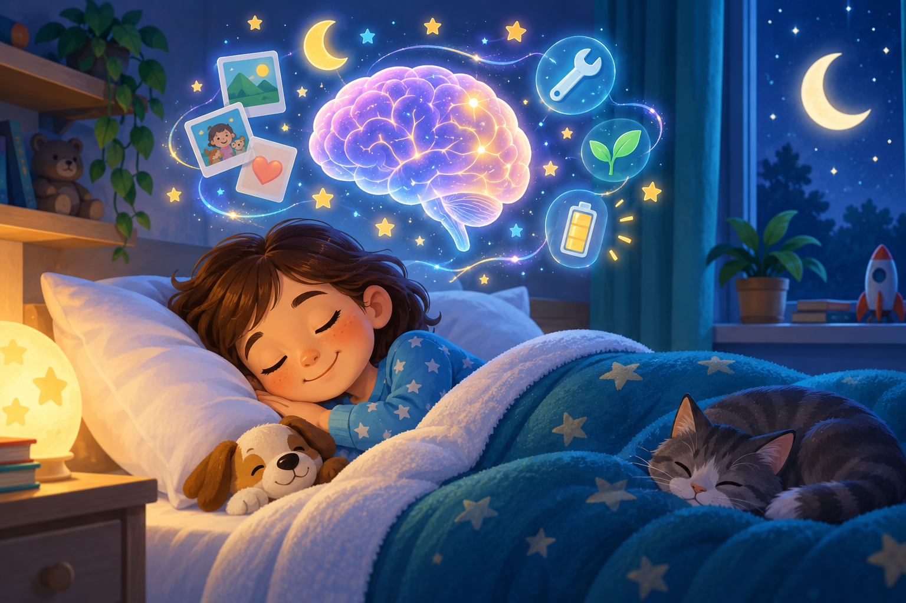

🧠
Learning
Sleep helps stabilize and organize new memories.
Sleep may look quiet from the outside, but your brain is busy sorting memories, managing emotions, supporting growth and preparing you for tomorrow.

Different systems use sleep to reset, organize and restore.
Sleep helps stabilize and organize new memories.
Brain activity and fluid movement change during sleep, supporting normal waste clearance.
Deep sleep supports physical restoration and normal growth processes.
Enough sleep supports attention, mood and emotional regulation.
The brain moves through non-REM stages and REM sleep repeatedly. A cycle commonly restarts about every 80–100 minutes, with roughly 4–6 cycles in a night.
Circadian rhythm is your approximately 24-hour timing system, strongly influenced by light and darkness. Sleep pressure gradually builds while you are awake and eases while you sleep. Together, they help determine when you feel alert or sleepy.
Educational information only. Verified September 7, 2026.